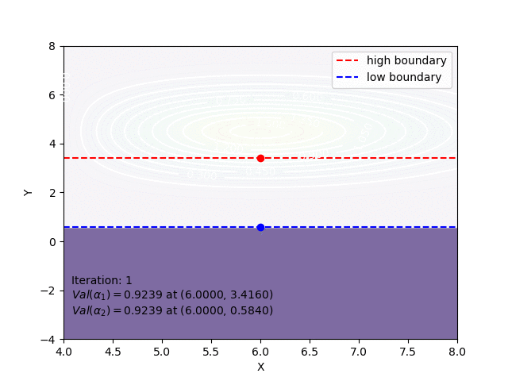
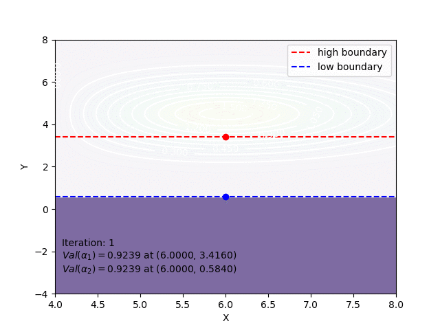

EDS-lab
实验设计和数据处理的作业，搭建了一个基于Django框架和，开源项目Wooey的可视化界面，用来展示优选法可视化的实验结果。
UI

结果
| 实验方法和过程可视化结果（2维） | 实验方法和过程可视化结果（3维） |
|---|---|
| 2D | 3D |
双因素选升法2D |
双因素选升法3D |
| 双因素平行线法2D | |
单纯形法2D |
注：图标题并非几种方法的标准英文翻译。
文档
证书
BSD
实验设计和数据处理的作业，搭建了一个基于Django框架和，开源项目Wooey的可视化界面，用来展示优选法可视化的实验结果。
| 实验方法和过程可视化结果（2维） | 实验方法和过程可视化结果（3维） |
|---|---|
| 2D | 3D |
| 双因素选升法2D |
双因素选升法3D |
| 双因素平行线法2D | |
| 单纯形法2D |
注：图标题并非几种方法的标准英文翻译。
BSD